1과목: 건축계획
1. 학교 교사의 배치계획 중 폐쇄형에 대한 설명으로 옳지 않은 것은?
2. 주거단지계획시 보행자를 위한 공간계획에 관한 설명 중 옳지 않은 것은?
3. 다음 중 건축가와 작품의 연결이 옳지 않은 것은?
4. 사무소 건축의 코어 형식 중 편심코어에 대한 설명으로 옳지 않은 것은?
5. 학교운영방식 중 교과교실형에 대한 설명으로 옳지 않은 것은?
6. 다음 중 상점 정면(facade)구성에 요구되는 상점과 관련되는 5가지 광고요소(AIDMA 법칙)속하지 않는 것은?
7. 다음 중 주택에서 옥내와 옥외를 연결시키는 완층적인 공간이 아닌 것은?
8. 다음 중 의사 및 간호사의 수술부에서의 동선으로 가장 적합한 것은?
9. 다음 중 미술관 전시실의 조명 및 채광계획에 관한 설명으로 옳지 않은 것은?
10. 도서관 출입구의 배치에 대한 설명 중 옳지 않은 것은?
11. 다음 중 일반 임대사무소 건축에 있어서 임대면적과 연면적의 비(임대면적/연면적)로 가장 적절한 것은?
12. 다음 중 고딕건축과 가장 관계가 먼 것은?
13. 학교 건축계획시 고려되는 융통성의 해결 수단과 가장 관계가 먼 것은?
14. 다음 중 사무소 건축에서 기준충의 평면을 한정하는 사항과 가장 관계가 먼 것은?
15. 다음 중 부엌의 작업순위에 따라 설치되는 설비기기의 순서로 가장 적당한 것은?
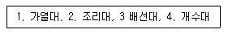
16. 다음 중 아파트의 평면 형식에 따른 분류에 속하지 않는 것은?
17. 극장의 음향계획에 관한 설명으로 옳지 않은 것은?
18. 다음의 병원건축계획에 관한 기술 중 가장 부적당한 것은?
19. 전시실의 순회형식 중 많은 실을 순서별로 통하여야 하는 불편이 있어 대규모의 미술관 계획에 있어서 바람직하지 않은 것은?
20. 다음 중 캐빈 린치(Kevin Lynch)가 주장한 “도시 이미지”의 구성요소가 아닌 것은?
2과목: 건축시공
21. 보통 콘크리트 공사에서 콘크리트에 포한된 염화물량의 기준은 염소이온량으로서 얼마 이하가 되어야 하는가?
22. 다음 중 토공사를 할 경우 주의해야 할 현상으로 가장 거리가 먼 것은?
23. 문윗틀과 문짝에 설치하여 문이 자동적으로 닫혀지게 하는 장치로서 도어 클로우저(door closer)라고 불리우는 것은?
24. 등분포하중을 받는 T형보의 콘크리트 이어붓기의 위치로서 가장 적당한 위치는 어느 것인가? (단, L은 스팬의 길이이다.)
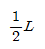
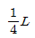
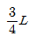
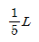
25. 공정표를 작성할 때의 주의사항 중 틀린 것은?
26. 공동도급방식(Joint Venture)에 대한 설명으로 옳은 것은?
27. 셀프레벨링재 바름에 대한 설명으로 옳지 않은 것은?
28. 거푸집 측압에 영향을 주는 요인에 관한 설명 중 틀린 것은?
29. 다음 중 프리텐션방식에 속하지 않는 공법은?
30. 벽두께 1.5B, 벽 면적 20m2 쌓기에 소요되는 표준형 벽돌의 정미량은? (단, 줄눈은 10mm로 한다.)
31. 목조, 철골조등의벽, 천장에 모르타르 바탕이 되어 부착이 잘되게 하며 미장재의 균열을 방지할 수 있는 금속재료로서 적당하지 않은 것은?
32. 웰포인트(Well point)공법에 관한 설명 중에서 틀린 것은?
33. 타일의 흡수율 크기의 대소관계가 알맞은 것은?
34. 다음 중 벽돌벽의 균열 원인이 아닌 것은?
35. 설계도에서 정미량으로 산출한 D10 철근량은 2,870kg이다. 할증을 고려한 소요량으로서 8m 짜리 철근 몇개를 운반하여야 하는가?
36. 건축 방수공사의 성능확인을 위한 가장 일반적인 시험 방법은?
37. 다음 중 건축공사의 직접공사비 원가로 바르게 구성된 것은?
38. 최근에는 바닥 마감재의 시공성 확보 및 일체성을 위해 플라스틱 바름 바닥재의 사용이 많아지고 있다. 다음의 플라스틱 바름 바닥재에 대한 설명으로 옳지 않은 것은?
39. MCX(Minimum Cost Expediting)기법에 의한 공기 단축 방법에 관한 설명 중 옳지 않은 것은?
40. 파이프 회전봉의 선단에 커터를 장치한 것으로 지중을 파고 다시 회전시켜 빼내면서 모르타르를 분출시켜 지중에 소일 콘크리트 파일을 형성시킨 말뚝은
3과목: 건축구조
41. 신축 건물의 기초파기 중 토질에 생기는 현상과 가장 관계가 먼 것은?
42. 강구조 기둥의 주각에 관한 설명 중 틀린 것은?
43. 다음과 같은 조건의 1방향 슬래브에서 처짐을 계산 하지 않고 정할 수 있는 슬래브의 최소 두께는?
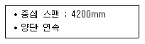
44. 그림에서 B점의 반력(RB) 값은?
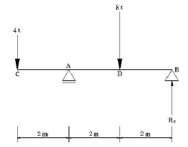
45. 다음과 같은 사다리꼴 다면의 도심 y0 값은?
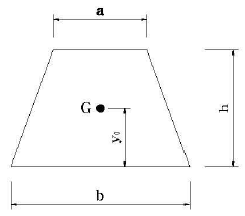
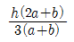
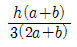
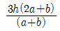
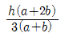
46. 그림과 같은 철근콘크리트 직사각형보의 설계강도는? (단, fck=21MPa, fy=400MPa, 강도감소계수 ∅=0.90, D22의 단면적 A=387mm2)
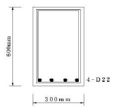
47. 그림과 같은 보의 최대 휨모멘트 값은?
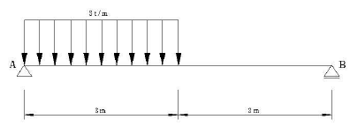
48. 강도설계법에서 직접설계법을 적용한 내부 경간 슬래브 설계시 계수 모멘트 Mo=25×104Nㆍm일 경우, 양단 연속된 슬래브에서 단×부와 중앙부의 계수모멘트는?
49. 그림과 같은 기둥에서 띠철근의 수직간격은 최데 얼마 이하로 하여야 하는가? (단, 주근은 4-D22, 띠철근은 D13)
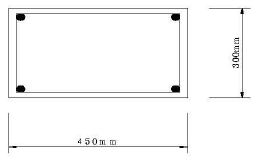
50. 그림과 같은 구조물의 판별로 옳은 것은?
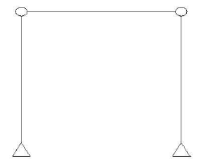
51. 다음의 내민보에서 등분포 하중이 작용할 때, 2개의 지점과 보의 중앙점에서 절대 최대 휨모멘트의 값이 같은 경우 L의 길이는?
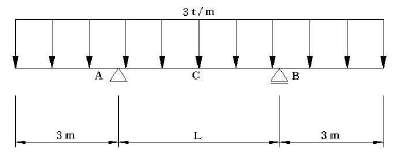
52. 다음 구조물의 a, b점에서의 휨모멘트는?
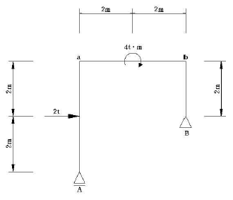
53. 다음 중 철골보의 휨내력이 부족시 보완대책으로 가장 알맞은 것은?
54. 조립식 건축구조에 과한 서령 중 옳지 않은 것은?
55. 극한강도설계법에서 콘크리트에 의한 공칭전단강도 Vc값이 140kN이고, 전단철근에 의한 공칭전단강도 Vs값이 120kN일 때, 계수 전단력 Vu값은? (단, ø=0.8)
56. 비틀림(Torsion)을 받는 부재의 종방향 철근의 보강근으로 가장 알맞은 것은?
57. 강도설계법에서 D19 인장철근의 기본 정착길이로 가장 가까운것은? (단, fck= 24MPa, fy = 400MPa)
58. 다음의 토질 및 지반에 관한 설명 중 틀린 것은?
59. 다음 중 철골보의 처짐을 저게 하는 방법으로 가장 알맞은 것은?
60. 다음 중 강구조 보에서 중간 스티프너를 사용하는 가장 주된 목적은?
4과목: 건축설비
61. 다음의 통기관에 대한 설명 중 옳은 것은?
62. 다음의 장소와 설치하여야 할 소화설비의 연결이 옳지 않은 것은?
63. 수질과 관련된 용어 주 부유물질로서 오수 중에 현탁 되어 있는 물질을 의미하는 것은?
64. 다음 중 수격작용의 발생 원인이 아닌 것은?
65. 35℃의 옥외공기 300m3/h와 27℃의 실내공기 700m3/h를 혼합하였을 경우, 혼합공기의 온도는?
66. 대규모 사무소건물의 공기조화설비에서 에너지절약을 위한 수단이 아닌 것은?
67. 공기조화방식 중 팬코일 유니트 방식에 대한 설명으로 옳지 않은 것은?
68. 급탕 가열장치를 설계하는 경우 급탕량을 4,500L/h, 급탕공급 온도 60℃, 급수온도 10℃, 코일의 열관류율 750kcal/m2h℃, 가열용 중기온도를 110℃라고 할 때 가열코일의 표면적 S(m2)는?(오류 신고가 접수된 문제입니다. 반드시 정답과 해설을 확인하시기 바랍니다.)
69. 다음의 플러시 밸브식 대변기에 대한 설명 중 옳지 않은 것은?
70. 다음의 유체의 물리적 성질에 관한 설명 중 옳지 않은 것은?
71. 순간 최대 급수량의 산정방법 중 기구급수부하 단위법에 대한 설명으로 옳지 않은 것은?
72. 개폐기의 일종으로 수용가의 인입구 부근에 설치하여 구분 개폐기로 사용하고, 또한 변압기 차단기, 피뢰기 등 고전압 기기의 1차측에 설치하여 기기를 점검, 수리할 때 회로를 분리하는데 사용하는 것은?
73. 다음의 실내음향에 대한 설명 중 옳지 않은 것은?
74. 에스컬레이터의 배열에 관한 설명 중 옳지 않은 것은?
75. 조명기구에 대한 설명 중 옳지 않은 것은?
76. 변전실의 위치에 대한 설명 중 옳지 않은 것은?
77. 조명 기구를 건축 내장재의 일부 마무리로써 건축 의장과 조명 기구를 일체화하는 조명방식을 의미하는 것은?
78. 다음의 엘리베이터에 대한 설명 중 옳지 않은 것은?(오류 신고가 접수된 문제입니다. 반드시 정답과 해설을 확인하시기 바랍니다.)
79. 다음이 증기난방에 대한 설명 중 옳지 않은 것은?
80. 다음 중 온수난방에서 복관식 배관에 역환수 방식(reverse return)을 채택하는 가장 주된 이유는?
5과목: 건축법규
81. 비상용승강기의 승강장 및 승강로의 구조에 관한 규정에 기술되어 있지 아니한 것은?
82. 일반적으로 제2종 일반주거지역에서 건축할 수 있는 건축물의 최대 층수는?
83. 부설주차장의 총 주차대수 규모가 8대 이하인 자주식 주차장(지평식)의 구조 및 설비기준으로 옳지 않은 것은?
84. 공동주택으로 지상층에 설치한 경우 바닥면적에 산입되는 것은?
85. 미리 사장, 군수, 구청장에게 건설교통부령이 정하는 바에 비해 신고함으로써 건축허가를 받은 것으로 보는 기준으로 틀린 것은?
86. 연면적의 합계가 5,000m2 이상인 건축물의 용도로서 공개공지를 법적으로 확보하지 않아도 되는 것은?
87. 2도의 기존 건축물을 철거하고 그 연면적과 동일하게 1동으로 건축할 경우의 행위는?
88. 계단의 설치 기준으로 옳은 것은?(오류 신고가 접수된 문제입니다. 반드시 정답과 해설을 확인하시기 바랍니다.)
89. 건축물이 있는 대지 분할 제한 조건과 관련이 없는 규정은?
90. 다음 중 건축법에 규정되어 있지 아니한 것은?
91. 비상용승강기의 승강장의 구조기준으로 틀린 것은?
92. 도시계획시설 또는 도시계획시설예정지에 건축을 허가 할 수 있는 가설건축물의 기준 항목이 아닌 것은?
93. 각 층별 바닥면적이 5,000m2이고 각 층별 거실면적의 합계가 3,000m2인 14층 숙박시설에 승용승강기를 24인승으로 설치하고자 할 때 필요한 최소대수는 얼마인가?
94. 건축물의 연면적이 10,000m2로서 주차전용건축물에서 주차장 외의 부분을 판매 및 영업시설로 사용하고자 할 때 주차장으로 사용되는 부분이 비율이 최소한 얼마 이상이 되어야 하는가?
95. 노외주차장의 설치에 대한 계획기준으로 옳지 않은 것은?
96. 제1종 지구단위계획구역 안에서 건축할 경우 대지의 일부를 공공시설 부지로 제공했을 경우라 하더라도 완화하여 적용받을 수 없는 항목은?
97. 관계 행전기관의 장과의 협의를 거치지 아니하고 지구단위계획을 변경할 수 있는 기준으로 옳은 것은?
98. 노상주차장의 구조 설비기준에 관한 내용으로 옳은 것은?
99. 6층이상 건축물에 배연설비를 설치하도록 규정한 것이 아닌 것은?
100. 건축법규에서 용도상 불가피하여 방화구획을 적용하지 아니하거나 완화하여 적용할 수 있는 건축물의 기준으로 틀린 것은?